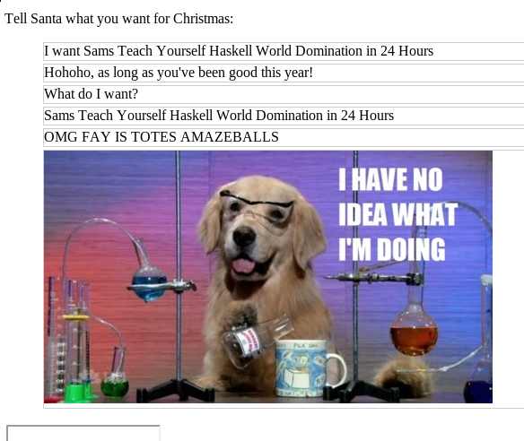

A few days ago, we looked at the websockets library. The server side was great - lots of Haskell! However, writing the client left a bit to be desired - we had to write JavaScript and HTML, yuck! Last year we saw that blaze-html gives us a nice EDSL for HTML generation, but what about JavaScript? Today we’re going to look at a slightly different approach, and look at Fay.
Rather than providing a library for GHC Haskell, Fay is a Haskell-to-JavaScript compiler - specifically allowing us to compile a subset of Haskell to JavaScript. Of these differences, the biggest is the lack of type classes, though many experienced Fay developers tend to feel this can be worked around. Let’s jump right in and rewrite our websockets client using Fay. First, a review of the existing JavaScript code:
var prompt = document.getElementById('prompt');
var connectionToSanta = new WebSocket("ws://localhost:8080/");
var messages = document.getElementById('repl');
function log(message, cls) {
var messageNode = document.createElement("li");
messageNode.innerHTML = message;
messageNode.className = cls;
repl.appendChild(messageNode);
}
connectionToSanta.onopen = function(e) {
prompt.disabled = false;
prompt.onkeydown = function (e) {
if (e.keyCode == 13) {
connectionToSanta.send(prompt.value);
log(prompt.value, "me");
prompt.value = "";
}
}
};
connectionToSanta.onmessage = function (m) {
log(m.data, "");
}There’s not a lot of JavaScript code here, but you’ll see that we do exercise a reasonable amount of the language. We’re using a few variables, some functions for callbacks, defining common functionality via a named function, and making API calls to create WebSockets.
First, lets look at the log function - that looks easy enough. We need to create a new DOM element, set a few properties on it, and then append it to another document element. Fay doesn’t come with functions to do this directly, but it does expose a foreign function interface that allows us to easily translate Haskell code into JavaScript calls. To do this, we simply create a function who’s body is a call to ffi, and provide an associated type signature. For createElement, we have:
data Element
createElement :: String -> Fay Element
createElement = ffi "document.createElement(%1)"The type signature indicates the type of the foreign function, and we use ffi to describe what actual code to run. Fay will interpolate function arguments into the JavaScript, using placeholders marked by %1, etc. We operate in the Fay monad, for the same reason we do potentially real-world side effecting work in the IO monad.
We’ve also introduced a Element type, which uses the EmptyDataDecls extension to add no constructors. This means the only way to create Elements is by calling out via foreign functions.
We need a more ffi routines to set the innerHTML and className, and another to append one Element to another. We write these in much the same way:
setInnerHTML :: Element -> String -> Fay ()
setInnerHTML = ffi "%1['innerHTML'] = %2"
setClassName :: Element -> String -> Fay ()
setClassName = ffi "%1['innerHTMl'] = %2"
appendChild :: Element -> Element -> Fay ()
appendChild = ffi "%1.appendChild(%2)"Now we can write our log function:
log :: Element -> String -> String -> Fay ()
log container msg cls = do
logNode <- createElement "li"
setInnerHTML logNode msg
setClassName logNode cls
container `appendChild` logNodeHere we simply use the Fay monad to sequence DOM-manipulating operations. As before, we create a new li element, set the class and content, and then append this to a log container. Because in Haskell we don’t have global variables, we have to explicitly pass in the log container - which is arguably more maintainable code anyway!
Now that we’ve seen how the FFI works, we can also see how to write the first lines of our script - we need FFI routines to select the prompt and log container elements, and one more call to create our WebSocket:
getElementById :: String -> Fay Element
getElementById = ffi "document.getElementById(%1)"
data WebSocket
newWebSocket :: String -> Fay WebSocket
newWebSocket = ffi "new WebSocket(%1)"To create new objects the syntax is the same as creating objects in JavaScript, and the same ffi call in Haskell - which is nice for consistency. We introduce a new type for WebSockets, in order to leverage the lovely benefits of type-safety in our Fay code.
Finally, we need to deal with callbacks. This is actually really simple and the answer is - you guessed it - another ffi declaration. This time, we’ll be a little more general, and create a ffi binding to add an event listener in the general case:
class Eventable
data Event
instance Eventable WebSocket
instance Eventable Element
addEventListener :: Eventable a => a -> String -> (Event -> Fay ()) -> Fay ()
addEventListener = ffi "%1[%2] = %3"Here we use the limited type class support in Fay to create a class of Eventable objects - and both Elements and WebSockets can have event listeners.
There are only a few more ffi bindings to go now, and then we’re ready to write the bulk of our application. I’ll leave the bindings to the associated code, and lets look at how our application looks when we put it all together:
main :: Fay ()
main = do
prompt <- getElementById "prompt"
messages <- getElementById "repl"
connectionToSanta <- newWebSocket "ws://localhost:8080"
addEventListener connectionToSanta "onopen" $ \_ -> do
setDisabled prompt False
addEventListener prompt "onkeydown" $ \e -> do
if (eventKeyCode e == 13)
then do
let message = elementValue prompt
connectionToSanta `send` message
log messages message "me"
clearValue prompt
else return ()
addEventListener connectionToSanta "onmessage" $ \e -> do
log messages (messageData e) ""To use this from the HTML page, we just need to drop in:
<script src="2013-12-23-fay.js" type="application/javascript"></script>Once we include this, our page behaves exactly as before. Except we also get that warm fuzzy feeling of knowing that we got to write Haskell to generate all of this.

The code for today’s post can be found on my Github account, as always. Make sure to join me again tomorrow of for this year’s final 24 Days of Hackage post as we’ll take a look back at the posts this months - with a twist.
You can contact me via email at ollie@ocharles.org.uk or tweet to me @acid2. I share almost all of my work at GitHub. This post is licensed under a Creative Commons Attribution-NonCommercial-NoDerivs 3.0 Unported License.